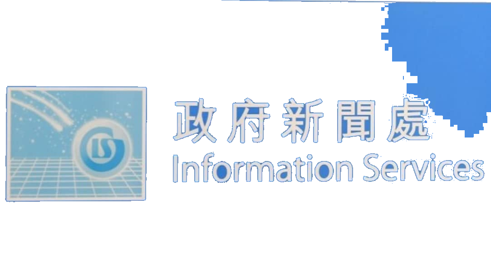

HB · Provision of Services for Production of TV and Radio Announcements in the Public Interest for Promoting the Basic Housing Unit Regime
🏠📸 Visual 素材（44 個：LOGO 2、視覺參考 28、新聞配圖 8、海報/單張 1、宣傳片 5）
搵到嘅 LOGO／海報／單張／宣傳片／真實參考相，每個有原網址。剔相後揀：⭐首選＝呢張參考優先過其他；🔁重搜＝搵過好啲（e.g. logo 污糟）；🗑刪除＝搵錯即清。



委員會／agency 諗橋一定收呢批做底，必跟。
1. 背景同目的
* 背景：香港特別行政區政府房屋局（HB）推行「簡樸房」（Basic Housing Unit, BHU）規管制度，旨在一舉根治不適切住宅分間單位（SDUs，俗稱分劏房）問題 。制度自 2026 年 3 月 1 日起按「先登記、後執法」原則實施，要求分劏房必須符合八大最低居住條件標準並取得認可 。政府提供 48 個月過渡期，包括 12 個月登記期（2026 年 3 月 1 日至 2027 年 2 月 28 日），成功登記可獲 36 個月寬限期（至 2030 年 2 月 28 日屆滿）以進行改建及申請認可 。由 2027 年 3 月 1 日起，出租未經登記及未獲認可的分劏房即屬刑事罪行，房屋局將按風險為本、秩序井然方式開展執法行動 。（出處：《02 Invitation to Quotation》Job Specifications p.1–2 [PDF p.29–30]；《01 Invitation letter》p.1 [PDF p.1]）
* 目的：房屋局（HB）在政府新聞處（ISD）協助下，委聘承辦商創作及製作兩輯電視及電台宣傳短片（API）：
1. 執法前版本（2026 年 12 月至 2027 年 2 月播放）：提醒業主/營運者登記期將於 2027 年 2 月底屆滿，呼籲盡快遞交登記申請 。
2. 執法後版本（2027 年 3 月 1 日起播放）：提醒業主/營運者非法出租未登記及未認可分劏房的刑事罪行條文已正式生效，並將按風險為本執行法例 。（出處：《02 Invitation to Quotation》Job Specifications p.1–2 [PDF p.29–30]；《01 Invitation letter》p.1 [PDF p.1]）
2. 目標受眾
* 目標受眾：全港一般公眾，特別是位於香港住宅大廈內現有及潛在的分間單位（SDUs）業主及營運者 。（出處：《02 Invitation to Quotation》Job Specifications p.1 [PDF p.29]）
3. 傳意目標／核心訊息
* 執法前版本核心訊息（2026 年 12 月–2027 年 2 月）：
1. 由 2027 年 3 月 1 日起，出租無有效寬限期登記及認可的簡樸房屬刑事罪行，政府會按風險為本有序執法，一經定罪最高可被判罰款 \$300,000 及監禁 3 年 。
2. 成功完成登記申請並取得 36 個月寬限期的住宅分劏房，在寬限期屆滿前（2030 年 2 月 28 日或之前）不會被納入執法行動 。
3. 寬限期登記申請將於 2027 年 2 月 28 日截止，強烈呼籲業主/營運者盡快申請 。（出處：《02 Invitation to Quotation》Job Specifications p.2 [PDF p.30]）
* 執法後版本核心訊息（2027 年 3 月 1 日起）：
1. 由 2027 年 3 月 1 日起，出租無有效寬限期登記及認可的簡樸房即屬刑事罪行，政府正按風險為本有序執法，最高可被判罰款 \$300,000 及監禁 3 年 。
2. 成功登記並取得 36 個月寬限期的住宅分劏房，在寬限期（至 2030 年 2 月 28 日）內不會被納入執法 。
3. 鼓勵業主/營運者善用寬限期逐步完成改建工程，並申請簡樸房認可，以合規營運 。（出處：《02 Invitation to Quotation》Job Specifications p.2 [PDF p.30]）
4. 影片／製作規格
* 電視宣傳短片（TV API） ：
* 版本與長度：共 2 輯（執法前版本與執法後版本），每輯長度固定為 30 秒 。
* 拍攝規格：首選以 HDCAM、RED ONE 或同等格式拍攝；可視乎創意方案考慮高清影片（HDV）或靜態相機拍攝 。
* 輸出格式：16:9 (HD) XDCAM HD422 @ 50Mbps MXF 檔案格式及 HDCAM 影帶格式（解析度 1920x1080，25 fps，PCM 24bit/48kHz 音訊）。
* 語言與字幕：廣東話配音（配繁體中文書面語字幕）及英語配音（配英文字幕）。
* 手語翻譯：廣東話及英文電視 API 均強制包含香港手語翻譯。手語視窗須呈橢圓形、大小為螢幕 1/6、固定於右下角、背景為不反光淺灰色或粉藍色、手語譯者須穿深色/黑色衣服，並與字幕同步 。
* 無障礙標準：須另外提供符合 W3C Web Content Accessibility Guidelines (WCAG) 2.2 Level AA 標準的網路播放版本 。（出處：《02 Invitation to Quotation》Job Specifications p.3–4 [PDF p.31–32]、Annex A [PDF p.35–38]）
* 電台宣傳短片（Radio API） ：
* 版本與長度：共 2 輯（對應電視 API 兩版本），每輯長度為 30 秒 。
* 語言與格式：包含廣東話、英語（英文電台版須採獨白 Monologue 形式）及普通話 。格式須提供港台用的 WAV 檔（48kHz/16bit，2 channel stereo）以及商台/新城用的 MP3 檔（44.1kHz/16bit 或 320Kbps）。（出處：《02 Invitation to Quotation》Job Specifications p.3–4 [PDF p.31–32]、Annex C [PDF p.41–42]）
* 音樂與聲效：首選 tailor-made / post-scored 量身訂造配樂，承辦商須辦妥全球及永久版權清繳（Clearance of copyright），確保可在全球各類媒體播放 。（出處：《02 Invitation to Quotation》Job Specifications p.3–4 [PDF p.31–32]）
5. 指定班底
* 手語翻譯員：須為香港一般手語使用者普遍理解及接受的翻譯員，並於最終完成版檢查手語翻譯精準度 。（出處：《02 Invitation to Quotation》Job Specifications p.3 [PDF p.31]）
* 配音員（Voice-over Talents） ：
* 電視 API：廣東話及英語配音員（英語配音須盡量以英語母語質感呈現）。
* 電台 API：廣東話、英語及普通話配音員（普通話配音員建議須考獲國家語委普通話水平測試「一級乙等」或以上資格）。若電台 API 因發音不準被公務員事務局法定語文事務部（OLD）退回，承辦商須免費重新錄音並替換 。（出處：《02 Invitation to Quotation》Job Specifications p.4 [PDF p.32]）
* 明星 / 名人（Celebrities，可選）：若創意建議包含明星/名人參演，承辦商須全權負責聯絡、辦理表演者權利清繳（使用期建議至少 2 年）、承擔髮型、化妝、服裝、道具及交通差旅費用 。（出處：《02 Invitation to Quotation》Job Specifications p.5 [PDF p.33]）
* 吉祥物 / KOL：標書原文並未指定或要求特定吉祥物或 KOL 參演 。（出處：《02 Invitation to Quotation》Job Specifications p.4–5 [PDF p.32–33]）
6. 創意及策略重點／風格要求
* 訊息準確性與清晰度（佔評分 30%）：訊息傳達必須極度清晰、精煉與準確，避免冗長或錯誤資訊 。（出處：《02 Invitation to Quotation》Annex 4 p.2 [PDF p.73]）
* 創意演繹（佔評分 15%）：以高度創意的手法呈現核心訊息，提升影片吸引力 。（出處：《02 Invitation to Quotation》Annex 4 p.3 [PDF p.74]）
* 宣傳衝擊力（Impact，15%）、記憶點（Recall，10%）與共鳴度（Resonance，10%）：能引發大眾廣泛關注、使觀眾輕易記住核心日期與刑罰，並有效說服業主/營運者及公眾 [27-33]。（出處：《02 Invitation to Quotation》Annex 4 p.3–5 [PDF p.74–76]）
* 科技創新與 ESG 建議（佔評分 20%）：
1. Pro-innovation 建議（15%）：直接提升影片製作服務效率、品質或傳播效果的技術/流程創新方案（提出 4 個或以上可行建議得滿分 15 分）。
2. ESG 建議（5%）：提升環境保護、可持續發展、社會責任（如聘用殘疾人士/復康人士）或治理的措施（提出 4 個或以上得滿分 5 分）。（出處：《02 Invitation to Quotation》Schedule I p.2 [PDF p.53]；Annex 4 p.5–6 [PDF p.76–77]）
8. 強制要求或紅線
* 雙信封制與文件完整性（Completeness Check）：必須採用雙信封制，技術建議書（含 Annex 1 Offer to be Bound、Annex 2 非串通報價證書、Annex 3 聲明書及 Schedule I）與價格建議書（Schedule II）須分別獨立密封於信封內，各一式兩份遞交 [49-51]。缺少任何必要表格或逾時遞交將直接被視為無效標書（Non-conforming / Invalid）。（出處：《02 Invitation to Quotation》Terms of Quotation p.1–2 [PDF p.4–5]；Annex 4 p.1 [PDF p.72]）
* 信封標記格式紅線：信封表面必須精準印上指定的英文 Quotation Reference 標籤，且嚴禁出現任何可識別投標公司身份的字樣、標誌或記號，否則不予考慮 。（出處：《01 Invitation letter》p.2 [PDF p.2]；《02 Invitation to Quotation》Terms of Quotation p.1–2 [PDF p.4–5]）
* 維護國家安全條款（National Security）：若投標者或承辦商從事、正從事或被合理相信從事可能構成/引致危害國家安全罪行之行為，政府有權取消其資格或即時終止合約 [53-55]。（出處：《02 Invitation to Quotation》Terms of Quotation p.6 [PDF p.9]；General Conditions Cl. 32 [PDF p.24]）
* 版權清繳與知識產權歸屬：影片及其所有素材（包含腳本、分鏡、拍攝毛片、原創音樂等）之全球及永久版權全歸政府所有 。承辦商須全權負責清繳所有音樂/影像版權（Clearance of rights），並承擔所有公開播放及 CASH/IFPI/HKRIA 等費用，確保政府不會面臨任何侵權索償 。（出處：《02 Invitation to Quotation》Special Conditions Cl. 4–5 [PDF p.28]；Annex 3 p.1 [PDF p.69]）
* 手語及無障礙格式強制規範：電視 API 必須嚴格遵從香港手語視窗規格（1/6 螢幕、右下角、橢圓形、粉藍/淺灰底）及 W3C WCAG 2.2 Level AA 無障礙網絡標準，不得有誤 [14-16]。（出處：《02 Invitation to Quotation》Job Specifications p.3–4 [PDF p.31–32]）
* 反串通與保密義務：須簽署非串通報價證書（Annex 2）及保密聲明（Annex 3）。圍標屬嚴重反競爭行為，政府有權無償取消資格、追討損失或通報競委會 [60-63]。（出處：《02 Invitation to Quotation》Terms of Quotation p.5 [PDF p.8]；Annex 2 [PDF p.62–63]）
💡 想唔想我跟住《RULEBOOK》其他 section（例如 §8 Internal Debrief 或 §9 5W1H 創意 Provocation）幫你製作內部比稿用的策略導航？
fetch_source（pypdf）抽嘅標書逐字原文 —— 委員會／agency／debrief／5W1H 都餵呢份做 ground-truth。 · 📄 開原始檔 ↗
===== 02 HB-DTSDU-Q26(26-27) - Invitation to Quotation (Housing Bureau, APIs for BHU Regime) (2026).pdf(Specification 原件)===== [p31] Job Specifications Page 2 of 6 Quotation No.: HB DTSDU/Q26/26-27 The criminal offence of illegal letting of SDUs with no registration and no recognition under the BHU regime will be effective from 1 March 2027. SDUs in residential flats that have been successfully registered and obtained a grace period can continue to be let out under their pre - existing tenancies until the grace period expires (i.e. on or before 28 February 2030). From 1 March 2027 onwards, HB will take enforcement actions against illegal letting of SDUs in a reasonable, compassionate and orderly manner and under a pragmatic, people-oriented and risk-based approach. Objectives HB intends to broadcast two versions of TV and radio APIs, including (i) a pre-enforcement version to be broadcast from December 2026 to February 2027 to encourage SDU owners/operators to apply for registration as soon as possible before the expiry of the grace -period registration period on 28 February 2027, otherwise the letting of SDUs with no registration and no recognition will be considered illegal starting from 1 March 2027; and (ii) a post-enforcement version to be broadcast from 1 March 2027 onwards to remind SDU owners/operators that the provisions concerning the offence of illegal letting of SDUs has been in force. Key Messages HB reserves the right to amend the key messages as it deems fit before the approval of the final versions of the TV and radio APIs by HB. The key messages for the pre-enforcement version and post-enforcement version to be conveyed are as follows respectively: Pre-enforcement version (i.e. for broadcast from December 2026 to February 2027): From 1 March 2027 onwards, letting an SDU without valid grace-period registration and valid BHU recognition will be a criminal offence , and enforcement actions will be taken in an orderly manner under the risk-based approach. Upon conviction, the maximum penalty is a fine of $300,000 and imprisonment for 3 years; SDUs in registered flats that have successfully completed the registration applications and obtained a 36 -month grace period will not be covered in the enforcement actions until the grace period expires on 28 February 2030; and applications for the grace -period registration will end by 28 February 2027; SDU owners/operators are strongly encouraged to apply for registration as soon as possible before the expiry of the registration period. Post-enforcement version (i.e. for broadcast from 1 March 2027 onwards): From 1 March 2027 onwards, letting an SDU without valid grace-period registration and valid BHU recognition is a criminal offence, and enforcement actions are pursued in an orderly manner under the risk -based approach. Upon conviction, the maximum penalty is a fine of $300,000 and imprisonment for 3 years; SDUs in registered flats that have successfully completed the registration applications and obtained a 36 -month grace period will not be covered in the enforcement actions until the grace period expires on 28 February 2030; and SDU owners/operators are encouraged to utilise the grace period to carry out necessary alteration works gradually and apply for BHU recognition for compliant operation of SDU rental business. [p32] Job Specifications Page 3 of 6 Quotation No.: HB DTSDU/Q26/26-27 Broadcast Date Both the pre-enforcement version and post-enforcement version of TV and radio APIs should be completed within the second half of November 2026 (say by 25 November 2026 (tentative)) . The pre-enforcement version TV and radio APIs should be delivered to TV and radio stations by 30 November 2026 (tentative) for broadcast from December 2026 to February 2027. The post- enforcement version TV and radio APIs should be delivered to TV and radio stations by 15 February 2027 (tentative) for broadcast from 1 March 2027 onwards. Deliverables 1. TV API (i) Two versions, one pre-enforcement version and one post-enforcement version; (ii) Shooting format: HDCAM, RED ONE or equivalent is preferred. High-definition Video (HDV) formats and still camera shooting may be considered depending on the creative; (iii) Output: (1) File -based format: 16:9 (HD) in XDCAM HD422 at 50Mbps in MXF (2) Video-tape format: 16:9 (HD) in HD CAM; (iv) Other technical requirements: Please refer to Annex A to Job Specification. (v) Duration: 30 seconds each; (vi) Language: Cantonese (with written Traditional Chinese subtitles 繁體中文書面語) and English (with English subtitles); (vii) Sign language interpretation: Inclusion of sign language interpretation ( 手語翻譯－香 港手語) for the TV APIs in both Cantonese and English versions . The sign language interpretation should be commonly used and understood by general sign language users in Hong Kong. Requirements regarding the window showing the sign language interpretation on screen are listed below: Shape: Oval-shaped; Size: One-sixth of the size of the screen for showing full version of the signs; Background: Non-reflective plain backdrop, preferably in light grey or powder blue colour; Position: Normally at lower right hand comer of the screen and in the same position throughout the TV API; Sign language interpreters are advised to wear dark clothes, preferably black colour; Presentation of the sign language should synchronise with the subtitling as far as possible; and The sign language interpreter is required to check the accuracy of the sign language interpretation in the final cut of the TV API. (viii) Background music: tailor -made / post -scored music is preferred . The Contractor is required to complete and return Annex D to Job Specification on the information on music copyright after production of the APIs; (ix) Soft and hard copies of the scripts; (x) Soft and hard copies of the storyboard (s) (together with draft scripts and description of visuals in both Chinese and English); (xi) Copies required: Please refer to Annex B to Job Specification; (xii) Twelve still pictures from the footage of the completed TV API all shown in a single image in JPEG format for each language version; (xiii) Essential information in the visuals of the TV API, such as website address, telephone
每個概念必跟，違 = 廢稿。
⚡ 創意亮點 — HB·Provision of Services for Production of TV and Radio Announcements in the Public Interest for Promoting the Basic Housing Unit Regime（research 掘出嚟，可以做橋嘅真嘢）
1. 🏷️ 房屋局標誌與無獨立 Mascot 品牌真貌
- 事實：房屋局（HB）以特區區徽配「房屋局 / Housing Bureau」字樣為官方識別，專題網頁 bhu.gov.hk 及現有 API 均無吉祥物或獨立 campaign logo；「簡樸房」正名取自「簡單、樸實」。（出處：[hooks-research] HB）
- 💡 可以點做橋：以「簡單、樸實」的空間視覺極簡主義為美術風格，回歸真實居住質素而無需虛構吉祥物。
2. 🏷️ 九龍城與深水埗官方改裝樣板房實景
- 事實：房屋局於九龍城衙前塱道昌盛大樓（「一間二」）及啟德道合眾樓（「一間三」）設有官方改裝樣板房示範，2026年3月1日制度啟動日局長亦於深水埗南昌社區客廳座談。（出處：[hooks-research] HB）
- 💡 可以點做橋：以實體樣板房的獨立水電錶、通風窗及防火規格實景拍攝，建立業主對合規改裝的真實信任感。
3. 💡 2027年3月1日刑事劃界與罰則
- 事實：由2027年3月1日起，出租未經登記及未獲認可的分劏房即屬刑事罪行，最高可被判罰款HK\$300,000及監禁3年；但成功登記可享36個月寬限期至2030年2月28日。（出處：《02 Invitation to Quotation》Job Specifications p.2）
- 💡 可以點做橋：以「\$30萬罰款+3年監禁 vs 36個月安全過渡期」的對比張力，驅使業主把握登記期逃生門。
4. 💡 8平方米與2.3米八大居住條件最低標準
- 事實：簡樸房規管制度規定內部樓面面積不得少於8平方米（約86平方呎），樓頂高度不得少於2.3米，且必須設有獨立廁所、開口通風窗戶及獨立水電錶等八大最低標準。（出處：《02 Invitation to Quotation》Job Specifications p.1-2）
- 💡 可以點做橋：將抽象數字轉化為「一床一廁一窗開到門」的直觀空間比照畫面，讓大眾一眼看懂合規要求。
5. 🇭🇰 民間「劏」字文化與「簡樸房」正名轉化
- 事實：民間習慣以「一劏二/三/四」稱呼分間單位，官方樣板房亦以「一間二/一間三」對譯；當局強調正名為「簡樸房」代表「簡單、樸實」，但亦承認民間劣質劏房問題。（出處：[hooks-research] HB）
- 💡 可以點做橋：以「由『劏』到『簡樸』」的名詞演變為敘事軸線，展現居住環境由混亂提升至合規尊嚴的轉變。
6. 🇭🇰 「早登記、早申請、有着數」警示口號
- 事實：房屋局官方宣傳片主口號為「簡樸房規管制度 登記改造 依法出租」，配合局長何永賢提倡的「早登記、早申請、有着數」及「全額豁免申請費」早鳥政策。（出處：[hooks-research] HB）
- 💡 可以點做橋：沿用「早登記有着數」的廣東話貼地口語，將合規登記包裝成保障租金收入的明智決策。
7. 👤 盧宛茵官方 API 彩蛋與民間對話感
- 事實：房屋局現有首階段宣傳片邀請盧宛茵飾演追問政策的精明師奶，以連環追問「簡樸房係咩？」拆解最低標準與過渡時間表，民間辨識度極高。（出處：[hooks-research] HB）
- 💡 可以點做橋：可承接或對應前作師奶角色對話語氣，以生活化互動消除政策宣傳的生硬感。
8. 🏷️ 1/6 橢圓形手語視窗與 WCAG 2.2 AA 無障礙標準
- 事實：標書強制規定電視 API 必須設有右下角 1/6 螢幕橢圓形手語翻譯視窗（淺灰/粉藍底、譯者穿深色衣），且網絡播放版須符合 W3C WCAG 2.2 Level AA 標準。（出處：《02 Invitation to Quotation》Job Specifications p.3-4）
- 💡 可以點做橋：將手語譯者與無障礙文字版面設計無縫融入畫面整體視覺風格，展現權威法規與社會包容度。
9. 🎯 Hidden Agenda（政府點解而家做）
- 事實：這條宣傳片背後的隱藏議程，是政府希望透過推廣「基本住屋單位制度」，為其「2030年內基本解決劣質劏房問題」及「推展簡樸房制度」的政策鋪路。政府正回應社會對房屋問題，特別是劏房問題的強烈不滿和「急難愁盼」情緒，試圖軟性地向市民灌輸「簡樸房」作為解決方案之一的理念，並為未來可能出現的簡樸房設計和生活模式預先進行輿論引導，以期降低政策推行時的阻力。同時，這也是政府展現其「有魄力有毅力」解決民生問題的決心，以提升其施政認受性。
- 💡 可以點做橋：可以將呢個深層目的織入概念，令片唔止講程序，更打中政府想傳達嘅 message。
Deep Research — HB · Provision of Services for Production of TV and Radio Announcements in the Public Interest for Promoting the Basic Housing Unit Regime
1. 議題深度背景(近期發展,補充事實)
* 香港政府近年積極推動多項房屋政策，以解決長期困擾基層市民的住屋問題，特別是劣質「劏房」問題。行政長官在2024年《施政報告》中宣布以立法方式制訂「簡樸房」制度，旨在確保住宅樓宇分間單位符合最低標準，包括面積、高度、消防安全、結構安全、獨立廁所、供水、照明通風及獨立水電錶等，並獲認證方可合法出租作居住用途。
* 「簡樸房」制度已於2026年3月1日開始按「先登記、後執法」的步伐推展，提供48個月過渡安排，目標是在2030年內基本解決住宅大廈內的劣質「劏房」問題。
* 政府亦大力增加公營房屋供應，目標是將公屋綜合輪候時間大幅降至4年以下。 預計未來五年（2026-27至2030-31年度），連同「簡約公屋」在內的公營房屋建屋量將達約19.6萬個單位。
* 「簡約公屋」作為突破性及創新的過渡房屋種類，旨在解決急切住戶的燃眉之急，改善他們居住的生活環境和質素。 預計所有3萬個「簡約公屋」單位將於2027年3月底前全部落成，較原定時間提前完成。
* 房屋局局長何永賢多次落區視察「簡約公屋」流動宣傳車，並與基層街坊交流，了解他們對新房屋政策的看法和期望。
* 政府亦推出「幸福設計」指引，強調房屋不只是建築物，更是居民生活質素、心理安定與社區凝聚的載體，將幸福感「制度化」成為房屋政策的核心價值。
2. 近期同類宣傳掃描(香港政府 + 相關機構)
* 房屋局「簡約公屋」流動宣傳車 (2026年)：房屋局局長何永賢親身到元朗同樂街等地，了解「簡約公屋」屯門欣寶路項目的流動宣傳車運作，並與已申請的街坊交流。宣傳車活動中，有「簡約公屋」青福路項目的「樓長」現身說法，分享入住後的積極轉變和喜悅。宣傳片中，有街坊提及過往在劏房的生活時不禁落淚，亦因生活迎來曙光而流下喜悅的淚水，並送上真情擁抱與感謝。
* Approach / Tone: 溫情感人，以真實個案分享為主，強調改善生活環境帶來的希望和幸福感。
* Effect: 透過真實故事引起共鳴，展現政策對基層市民的實際幫助。
* 行政長官2025年施政報告（房屋）電視宣傳短片 (2025年)：短片旁白強調政府致力改善基層市民的居住環境，加速興建公屋，並推出「簡約公屋」和「簡樸房」規管制度。片中亦有「簡約公屋」居民表示「較舊時（的環境）更佳」。
* Approach / Tone: 政策宣導為主，簡潔直接，強調政府的努力和成效，並輔以居民的正面評價。
* Effect: 傳達政府在房屋政策上的決心和成果，讓市民了解政策內容。
* 政府宣傳片「簡約公屋」申請 (2025-2026年)：YouTube上可找到多個關於「簡約公屋」第二期及第三期申請的政府宣傳片。
* Approach / Tone: 資訊性，主要告知市民申請詳情和截止日期。
* Effect: 提高政策的認知度，鼓勵合資格市民申請。
* 房屋局「簡樸房」制度街站宣傳 (2026年)：房屋局副局長戴尚誠聯同立法會議員到佐敦和葵涌宣傳「簡樸房」制度，呼籲業主把握「早鳥優惠」遞交登記申請。街站亦派發英文宣傳單張，並主動以少數族裔語言問好，確保少數族裔也能獲取相關資訊。
* Approach / Tone: 社區外展，直接接觸目標受眾，提供實用資訊，並強調政策的包容性。
* Effect: 提高政策的覆蓋面，解答市民疑問，鼓勵業主登記。
* 香港房屋委員會機構短片-《上進上流共築幸福》 (2026年)：短片反映居民的日常生活，鄰里社區間的關懷，以及市民對房委會公營房屋工作的期望。強調房委會致力落實未來各項工作及目標，並持續推動建築科技的發展與應用，見證居民的幸福生活及逐步向上流動的歷程。
* Approach / Tone: 溫情、勵志，強調社區共融和向上流動的價值觀。
* Effect: 建立房委會的正面形象，傳達房屋政策不僅提供居所，更提供機會和希望。
* 香港電台《千禧年代》訪問 (2025年)：盧偉國議員在節目中討論收緊公屋富戶政策，認為政策「既有加辣又有加甜」，旨在鼓勵富戶向上流動，並強調公屋政策的原意是提供改善居住環境的旋轉門。
* Approach / Tone: 政策解讀，透過專家或議員的視角，解釋政策背後的理念和影響。
* Effect: 幫助公眾理解政策的複雜性，減少誤解。
3. 競品 / 同類創意做法(本地 + 國際參考)
* 地產商廣告 (香港，長期)：
* Approach: 過去多以塑造金碧輝煌的貴族生活、優質品味、星級享受為主，滿足中產階層的「虛榮心」，並常採用西方俊男美女作主角。
* Observation: 《一手住宅物業銷售條例》生效後，廣告傾向資料性，展示項目外貌、實地拍攝照片、平面圖等，但優質生活仍是主要賣點。
* Lesson: 雖然政府宣傳與商業地產廣告性質不同，但可借鑒其在塑造「理想生活」方面的技巧，但需避免過度誇大或脫離現實。
* 「數量錯覺」研究報告 (香港，2026年)：本地智庫「未來經濟學院」發表的《愈建愈小》研究報告指出，香港房屋供應存在「數量錯覺」，即政府或市場只強調落成單位的「數量」增長，但實際的「居住總面積」和「平均單位面積」卻在縮小。
* Approach: 以數據和研究結果揭示房屋問題的深層次矛盾。
* Observation: 報告指出「納米樓」大量湧現，私人市場的新增供應為了維持高昂樓價，犧牲了市民的居住環境。
* Lesson: 政府宣傳應避免只強調數量，而應更注重居住質素和實際生活空間的改善，以回應市民對「住大啲」的期望。
* 國際房屋政策宣傳 (一般)：
* Approach: 許多國家在推廣房屋政策時，會強調社會公平、可持續發展、社區共融等價值觀。例如，新加坡的組屋政策常強調其對社會穩定的貢獻，以及為不同收入階層提供可負擔居所。
* Observation: 國際上成功的房屋宣傳往往會將政策與國民福祉、社會進步等宏大敘事結合。
* Lesson: 香港的宣傳可考慮將「基本住屋單位」與香港的長遠發展、社會和諧等更廣泛的議題聯繫起來。
4. 已經做到濫嘅 approach / trope(要避開)
* 純粹羅列政策數據和數字：雖然重要，但過於冰冷的數字難以引起市民共鳴，容易被視為「官腔」。
* 過度強調「供應量」而忽略「居住質素」：市民對房屋的期望不僅是「有瓦遮頭」，更希望有合理的生活空間和舒適的居住環境。
* 以「上車」作為唯一成功指標：香港社會對置業的壓力巨大，但並非所有人都以置業為目標。過度強調「上車」可能忽略了租戶的需求，也可能加劇社會焦慮。
* 過於「離地」的理想生活描繪：商業地產廣告中常見的奢華、貴族式生活描繪，與基層市民的現實生活相距甚遠，容易引起反感。
* 單向的政策宣導：缺乏與市民的互動和對話，未能有效回應市民的疑慮和訴求。
5. 差異化空白(機會,唔係 idea)
* 情感連結：從「安居」到「樂業」的延伸：目前宣傳多聚焦於解決「安居」問題，但房屋政策對個人發展、家庭幸福、甚至社會流動的影響，仍有很大的情感空白可以探索。例如，一個穩定的居所如何讓基層家庭的孩子有更好的學習環境，讓父母有更多精力投入工作或自我提升。
* 受眾細分：青年群體的置業焦慮與租屋需求：雖然有提及青年置業，但針對年輕一代對房屋的獨特需求和焦慮（例如「納米樓」問題、租金壓力、對生活模式的追求），仍缺乏深入的溝通。如何讓他們感受到政府的房屋政策能真正回應他們的期望，而不僅是提供一個「細單位」。
* 社區共融：強調鄰里關係與社會資本：現有宣傳有提及社區關懷，但可以更深入地探討房屋政策如何促進不同背景居民之間的互動，建立互助互愛的社區網絡，提升社會資本。例如，簡約公屋和簡樸房的設計如何鼓勵鄰里交流，打破「劏房」帶來的孤立感。
* 創新與科技：房屋建設的未來願景：政府在房屋建設中應用「組裝合成」建築法（MiC）和建築科技，但這方面的宣傳仍可更具體和吸引。 如何將這些創新技術與提升居住質素、環保、智慧生活等概念結合，展現香港房屋發展的未來願景。
* 政策透明度與信任建立：面對公眾對房屋政策的疑慮和批評，宣傳可以更
【來源】
- https://vertexaisearch.cloud.google.com/grounding-api-redirect/AUZIYQFM1Zghcxmp9MsDykHzW3UmaDxUHsnAHFCLDQseBFlOrnzRCZ2ezT1OBINrSFM313i-HIhyYylYrLDVJB9uGRePpWE8l9Vqq9wtp-hBJefSuefYmaOfm3qp
- https://vertexaisearch.cloud.google.com/grounding-api-redirect/AUZIYQGfXtFLb7kG_XC1LOMJIWOs0e8dN-YlYHTSPPrJfhOnXDwYj1A_ph9Z50DHQs3Nqasf5euaUIbVDAmEq-1De7Cjmg_Cg2_ccLJ1dRC7n5XzEGgS2j_JL7rd2ocDUcWzoP0XlCkBmnE9zSdzDdhWCsg00o2-1NanYha5bU2ilgxNgJwiReFcoQWBO4zoGuiDRFwhq63djTQeDeEtXp6Pizkl7KgOjzxzwXXS-LAtOh2QI_PXPoq6iF_hOGAJuh7DlrA5_3gxi5d3rjU8jsv1Z4a90SPiodNlTT7-xEIqBSxVihnUFMG9hE6c4vE6GWfYEDHekJguPpKUSH64JOfCzOUMq9uC0dYTY8RHP6An4Y0ly1PDbA_fk9BG4pBus2VdQbTQnr7lFQg6UlgzMMy8mWjlWG-3Zk8D82Y2wy6v6iE64_P6NxqPKDX-FRn8tk5qUJx3-aAzOSM4DQ-w1JLqpEBBLVx7nChCYorp9bEwHrW2
- https://vertexaisearch.cloud.google.com/grounding-api-redirect/AUZIYQEywlgI0LZr1JfdhXbu-NbWxu0wGyA8nU7S6KX7W7Z9UKzM3fHl3E1s4S5Uqhnm0_SENPsBGxZkCgxMf-61DhTrN0jhiHgDLagFIS-vbAg8MneMLg_oUm-R4khjq4v4Z5UekmaNmm3YlX9HxeYEYNAgyEntZZs3asb2q6Np73NBHs0d08Z21e4bHsTht9PJG7-_-F5zP5DkUEKbRHZEm-JI2guIXMWM2xH_PoLo4yP1eDR35Xuixa9wLNkdgzayFD-EMF9asTq5z2GC-05wZGgj3kc879VKc-jiz--5W1t8C0xbwfijx6xTZ-X1UkoKgYVFxF8G9e7f8JQtKpCC7gPmOmBu8PMjH2giHHP6Omc5TByECtMuZO4iVGnKzwH_H6M_V_knzd_h-GJ2xfyD1IYt3fKoHVKFabQ2ohxJAwzFz872DlhlqyQvEXmNmzvbhLs6O_CrIhODplAbPoApgOlYTGczbt2ajLi_olns_XdCtnn6vtJvleDz9GV3LP85uOzE-L8df0oRyBwsz-aloEWMwN3F_vbQ_O93ugd9wgZEME1TJQCSQVKRTIqGhHZANHnT2Au5mNaTjJ0=
- https://vertexaisearch.cloud.google.com/grounding-api-redirect/AUZIYQFOOn-O9iUbiWj-b2r7zlBK0L2kak-8Qs9QwnFf7A_jD-GNkL3sERfMoceDo2B_gcnQ157eDGmSyiZv-s3cSqVNY7SHfHdYWPOESj3BbfKNfvb_IWAIi_tJn3ip-fvNDcFhyHt4SGhsdIwarOSgGBqnbvo0gp5AVUgzaOANATXQNLHVDuNT1pAf-PIy2qTY-5UL2CdtwM1bD1-UtgU-i8SM9vrGA6FxBRPpiYaTg5wFEjWX97RJ7f5moNKDmki2e1EciCIlrPBTduzY1n5UlSH7nQFMEqNTLwyG9ZDRWEmRXX_Cd1vhndOR8PzYVMlCdSQFWC-5JektXQt37NRgGAlIyEWFaTt0BPhZxoI5I8fplQgf64UlDOZYUg==
- https://vertexaisearch.cloud.google.com/grounding-api-redirect/AUZIYQFTbHfZaRH8CZn3_eD4msHFTDFe5vswk--zSBMNTRI8cFNRtb56mpyf_3AXxtl8rTXXRYmzdMITUjDZ4qDBmTlvjOUE4d46p1v4eAqxrj7Gwc-mOX9O2vfx63J8QjMly0o5fgicG57uC4W8CCHm6WWuZ9X05J9cdSbiDH51IvsX
- https://vertexaisearch.cloud.google.com/grounding-api-redirect/AUZIYQFSWAqQ7XE7rJI285uysSoDIfvyuqL03X77RymlCx5ksbGKW-Ae_V-5NjchqH0JWU-ssso522b20c2PqD-L-caPkVy8w_9u-bBQMLu2n4cKHPIJFzGpKJkQCq3cEj9Y2ZfkgARy1goYZxxwGMJ99ZAAQrIHcmDJ0CCK6Ctf4ksLYQisvXS07KMfOUQ--BHo-587QV0HrHRGYd90IzvOVE8aqMYwAG8CJSz4DHMmfvjWfXaad6mvtzjKxTIFg_zXi-yBr9mYVQ8urOFtYwB-guBSa-be-y63ZdTQ4L9ghGyMwV3LPCtZkySQt32hJ-fqD7bY2oFH9JA6-9eU5H0zSbe4YXo085Rds_kN1u0KN25eg2rSYwXEr5b4XECUexYPkFOTZEOmRg0YZpgBKpZwRfA0-V8sgNRY1QEa5CNJJAmYsJ90Tr4h70BZ8wb1HpAKPHRQvAe4HuBjjg-MgDW3Y2ZuhyDrVPqh7jNXBEY_50m8pOqLL39C0s-PeYdnjBxiy1wAqoWbLfbyDZrkybsYfeZwlwWaYgkL0DpjJXP-IZmSwQ==
- https://vertexaisearch.cloud.google.com/grounding-api-redirect/AUZIYQGyQFDvhWjwhPxAGjVpPVlFDM2DBNHQtflsMybvjfb_6aDMCiN_IwwdG5rBuYokDUfrtu72JEC0NTo4d8NvqOhOGRxvh3ShNaCW8UzmqKlSv2yWdoogW0DXSMirvqxX0I43R460b3eY4VXKgxE2KJEnjiq7-GPy
- https://vertexaisearch.cloud.google.com/grounding-api-redirect/AUZIYQGUvUrHbz3IEjOtNJdgjqeCnmTEpDC4TFadGzMgU1zXlJBZUtIxK6rcnwnlz6KxcnTVK-LzJfMNcChH7xRtQPmey89Rpq75Ien0AFu1tuA96UCH6IpnqnmvW-MSvmryKNXP-iwtpo19kpnyr0XzEiYiUBy4N445AIVXzR9234saiSG9vGqrtDaeEgh58Y0C2b7dD1reA20ayUl2qlJC-wI0CYKGMuSLJ0KCFORTl2jcSBz8-y5Bx5BSKGh_-Ii31D9umZAWvK6v1xOuvVMdv0df2_v0AcJdOvoLn4InClLgSAapc_jZI6h-Xlu90mzTFnAmFj2EKe9h4EWHn76VMbh0ytO8LyJYqFs13VrIMnOpiwiTeBHNVtwkQw1r2ivygHAAdHNm_Y6C9w8L55YTecdAmTHdWcmPuEF2JFnRxamYoOl4dTyMnMEco4sDnpd5-dWcbYJE1Qs-MyRVIn5tEtcP7ArWUcl9olbrtr2DTw==
好的，這是一份為廣告創作團隊準備的「官方用語對照表」，旨在確保宣傳片內容的準確性與官方一致性。
---
香港政府房屋局「簡樸房」宣傳片 官方用語對照表
1. 部門 / 辦事處
* 房屋局
* 官方英文全名：Housing Bureau (HB)
* 官方網址：[https://www.hb.gov.hk/tc/index.html](https://www.hb.gov.hk/tc/index.html)
* 政府新聞處
* 官方英文全名：Information Services Department (ISD)
* 官方網址：[https://www.isd.gov.hk/](https://www.isd.gov.hk/)
* 公務員事務局法定語文事務部
* 官方英文全名：Official Languages Division, Civil Service Bureau (OLD)
* 官方網址：[https://www.csb.gov.hk/tc_chi/corp_info/old/index.html](https://www.csb.gov.hk/tc_chi/corp_info/old/index.html)
2. 計劃 / 政策 / 程序
* 簡樸房規管制度
* 官方英文名稱：Basic Housing Unit (BHU) Regulatory Regime (根據 brief 內容，此為暫定官方譯名，待房屋局正式公佈)
* 不適切住宅分間單位
* 官方英文名稱：Subdivided Units (SDUs) (俗稱「分劏房」)
* 先登記、後執法
* 官方英文名稱：Register First, Enforce Later (根據 brief 內容，此為暫定官方譯名，待房屋局正式公佈)
* 最低居住條件標準
* 官方英文名稱：Minimum Living Condition Standards (根據 brief 內容，此為暫定官方譯名，待房屋局正式公佈)
* 登記期
* 官方英文名稱：Registration Period
* 寬限期
* 官方英文名稱：Grace Period
* 風險為本、秩序井然方式
* 官方英文名稱：Risk-based and Orderly Manner (根據 brief 內容，此為暫定官方譯名，待房屋局正式公佈)
* 電視及電台宣傳短片
* 官方英文名稱：Television and Radio Announcements in the Public Interest (APIs)
* 國家語委普通話水平測試
* 官方英文名稱：Putonghua Proficiency Test of the State Language Commission
3. 專有名詞 / 技術詞
* 業主 / 營運者
* 官方英文對照：Owner / Operator
* 刑事罪行
* 官方英文對照：Criminal Offence
* 罰款
* 官方英文對照：Fine
* 監禁
* 官方英文對照：Imprisonment
* 評審小組
* 官方英文對照：Assessment Panel
* 技術建議書
* 官方英文對照：Technical Proposal
* 價格建議書
* 官方英文對照：Price Proposal
* 雙信封制
* 官方英文對照：Two-envelope System
* 非串通報價證書
* 官方英文對照：Certificate of Non-collusion
* 聲明書
* 官方英文對照：Declaration
* 無效標書
* 官方英文對照：Non-conforming / Invalid Tender (或 Quotation)
* 國家安全
* 官方英文對照：National Security
* 版權清繳
* 官方英文對照：Clearance of Copyright / Clearance of Rights
* 知識產權歸屬
* 官方英文對照：Intellectual Property Ownership
* 手語翻譯
* 官方英文對照：Sign Language Interpretation
* 無障礙標準
* 官方英文對照：Accessibility Standards
* 世界萬維網聯盟無障礙網頁內容指引
* 官方英文全名：W3C Web Content Accessibility Guidelines (WCAG)
* 初剪
* 官方英文對照：Rough Cut
* 最終剪接
* 官方英文對照：Final Cut
* 派台檔
* 官方英文對照：Station Copies
* 線上簡介會
* 官方英文對照：Online Briefing Session
* 截標
* 官方英文對照：Tender Closing / Quotation Closing
* 解報會
* 官方英文對照：Debriefing Session
* 拍攝前會議
* 官方英文對照：Pre-production Meeting
4. 常見會錯譯 / 易混淆的地方
* 「分劏房」
* 錯誤寫法：Split flat, subdivided flat
* 正確寫法：Subdivided Units (SDUs) (此為官方慣用縮寫，建議在首次提及時使用全稱並括號註明縮寫)
* 「簡樸房」
* 錯誤寫法：Simple Housing Unit, Basic Unit
* 正確寫法：Basic Housing Unit (BHU) (根據 brief 內容，此為暫定官方譯名，待房屋局正式公佈)
* 「宣傳短片」
* 錯誤寫法：Advertisement, Commercial
* 正確寫法：Announcements in the Public Interest (API) (此為政府新聞處的官方用語)
* 「公眾」
* 錯誤寫法：The public
* 正確寫法：General public (更為完整和常用)
* 「風險為本」
* 錯誤寫法：Risk-based
* 正確寫法：Risk-based (此為正確寫法，但需注意其後通常會接續其他詞語，如 "risk-based approach" 或 "risk-based and orderly manner")
* 「一級乙等」 (普通話水平測試)
* 錯誤寫法：Level 1B
* 正確寫法：Grade 1, Level B (或 Grade 1, Class B)
* 「版權清繳」
* 錯誤寫法：Copyright settlement, copyright payment
* 正確寫法：Clearance of copyright / Clearance of rights (強調取得使用權的過程)
---
搵到嘅官方來源（網頁名 + 撮要，似 search 結果；撳入睇原文）：
- 除標書表明，人物一般使用華人面孔（東亞／香港華人），唔好生成西方／白人臉
- 衣著連戲：同一角色每一格都著返同一套衫（衫款／顏色／髮型／配件固定），除非故事明寫佢換咗衫
- 全 board 畫風完全一致：同一 render 風格／同一打燈／同一色調／同一線條筆觸，由頭到尾統一，似同一個畫師一次過畫
- Storyboard 盡量唔好出現雨傘；若劇情一定要有雨傘，唔可以係黃色
唔強制，諗橋時隨機抽嚟畀 agency 撞火花。
5W1H 創意 Provocation — HB
WHO — 對邊個講 + 佢而家點
- Q1 如果呢個 message 只可以打動「最唔關心、最 cynical」嗰個觀眾——要加咩一個 element（畫面／聲／人物／情境）先 3 秒內 hook 住佢、令佢唔 skip？
→ 加一個「舊式唐樓租約蓋上巨型紅色『違法出租／最高罰款 \$30萬及監禁 3 年』刑事警告印」嘅特寫畫面，配合法庭槌擊聲音 element 。直接以最切身嘅法網懲處衝擊抱持觀望心態嘅劏房業主，3 秒內震撼其經濟與人身自由利益 。
- Q2 呢班受眾平時食開咩視聽語言（平台／節奏／語氣）？要 adapt 邊種佢熟悉嘅風格，先入到腦而唔似「政府嘢」？
→ adapt 「實境裝修直擊／驗樓解密（House Inspection）短視頻」風格，採用快節奏直刀剪接（jump cuts）與手持相機實境鏡頭 。語氣採用擬真實務專家「拆解法規迷思」嘅冷靜解構調子，摒棄傳統政府宣布式教條，令業主感覺似睇緊地產裝修專題教學而非官方訓示 。
WHAT — 收窄到一個 + 證據
- Q3 成個 campaign 只准觀眾記住一個 element（一個畫面／一個 visual device／一句）——你揀咩？點解係佢？
→ 揀「『\$30萬罰款+3年監禁』刑事死線 vs 『36 個月寬限期』過渡安全網」嘅雙軌視覺對比裝置（split-screen / visual duality）。因為業主核心痛點係恐懼血本無歸同入獄，此裝置能最直觀將「違法代價」與「合法逃生門」強烈對照，驅使業主選擇登記過渡 。
- Q4 客戶 key message 好抽象，要用咩具體 element（真場面／真數字／真人／真物）去「show 唔 tell」，令佢落地、唔流口號？
→ 加「九龍城衙前塱道昌盛大樓／啟德道合眾樓官方樣板房」嘅真實改裝物件——包括「獨立水電錶」、「開口通風窗」、「8 平方米樓面卷尺實測」及「火警偵測器」。用真建築物理規格與數值「show 唔 tell」，讓業主眼見合規改裝嘅真實樣貌與可行性 。
WHY — 點解信 + 情感
- Q5 觀眾點解要信／關佢事？要加咩證據 element 或情感共鳴 element，先由「事不關己」變「同我有關」？
→ 加「2027 年 3 月 1 日刑事執法劃界時間標尺」證據 element，配合「深水埗南昌社區客廳／長沙灣道合規單位」居住環境改善嘅基層尊嚴畫面 。以法例生效倒數嘅真實法律後果提供理性逼切性，再以合規租賃安心收租嘅情感共鳴，將業主嘅「法律風險」轉化為「長遠穩定收益」。
WHEN / WHERE — 出街情境
- Q6 呢條嘢實際喺邊度、咩狀態被睇到（電視 prime／車廂無聲／手機 scroll／戶外經過）？要 adapt 咩風格（有聲冇聲／首 3 秒／大字／節奏）先食到當下情境？
→ adapt 「無聲勝有聲（Muted Autoplay）高對比大字標題」風格，配合螢幕 1/6 右下角橢圓形手語視窗與滿屏雙語動態 Super 。針對巴士車廂、港鐵及手機無聲 scroll 情境，前 3 秒以粗體動態文字高光標示「2027.3.1 刑事執法」及「36個月寬限期」，確保無聲播放下關鍵法律日期與訊息依然 100% 入腦 。
- Q7 出街時間（事件前／中／後）decide 調子係「預告期待」定「總結成就」？要加咩 element 配合呢個時間感？
→ 執法前版本（2026.12–2027.02）調子為「死線倒數警示」，加「2027 年 2 月 28 日登記截止倒數日曆」動態元素 ；執法後版本（2027.03 起）調子為「刑事執法既成事實」，加「執法行動開啟／合規認證標章」視覺元素，精準切換預告危機與執法決心 。
HOW — 風格 + 差異化
- Q8 同類（同部門／同題材）政府片嘅「安全做法」係咩？要 adapt／升級邊種風格 element（質感／節奏／transition／配樂／美術流派），先做到「框內最高質」而唔悶？
→ 安全做法係「傳統演員對答+旁白硬朗宣讀」（如盧宛茵前作）。升級 adapt 「工業風現代紀錄片質感（Modern Industrial Documentary）」——採用低飽和度冷色調光影、建築幾何線條轉場（architectural transitions）及 tailor-made 原創後配樂（electronic ambient track），提升整體電影感與法規權威質感 。
- Q9 要加咩一個 unexpected element（反差／新 visual device／新手法），先同部門過往 campaign 拉開距離、唔似翻炒，但又唔踩紅線？
→ 加「3D 建築結構剖析視覺裝置（Architectural Blueprint X-Ray）」——以高科技藍圖光影穿透唐樓外牆，將舊式劏房瞬間擬真重組為符合「八大標準」嘅認可簡樸房 。以建築工程美學做反差視覺，同過往「宣傳片講話」拉開距離，完全符合 15% Pro-innovation 創新評分要求且絕不踩紅線 。
---
*用法：agency／委員會落橋前先消化呢 9 條，順住 element＋風格方向諗，唔好離地。*
💡 呢份 5W1H Provocation 已經完全對應房屋局 (HB) 標書內容與《標書頁 RULEBOOK》§9 規範。你想繼續產生 §11 嘅 6 個創意方向及文字 Storyboard，定係調整其他標書頁卡片內容？
【呢條 brief 判定】目的:宣佈新法例/措施/勸喻/警示 題材:房屋置業, 國安國教
【同目的(宣佈新法例/措施)ISD 慣性】主開頭 旁白場景(54%);格式率 旁白81% 熒幕蓋字100% 標誌結尾68% CTA81% 感嘆40% 三段式·0%;慣用結尾 查詢：2891 1001, www.elections.gov.hk, 網站二維碼, 房屋局標誌
【對口 ISD 舊作借鏡(同 目的×題材,參考佢點寫,唔好照抄,要創新)】
— 簡樸房規管制度現已實施 [宣佈新法例/措施 | 房屋置業]
▶ https://www.youtube.com/watch?v=3BCMg9-ds4M&list=PL1188A9802575C33F
盧宛茵：簡樸房？ / 最低標準？ / 甚麼東西？ / 男旁白：簡樸房制度已經實施 / 熒幕蓋字：簡樸房規管制度 已經實施 / 男旁白：業主有責任就住宅分間單位 / 提供安全、衞生、合理的居住環境 / 熒幕蓋字：安全 衞生 合理 / 男旁白：單位須符合八項最低標準 / 還要取得認證 / 才可以合法出租 / 熒幕蓋字：內部樓面最少8平方米 / 高度最少2.3米 / 盧宛茵：時間方面…… / 男旁白：現在登記會有36個月寬限期過渡安排 / 熒幕蓋字：2027年2月28日前登記 / 可獲36個月寬限期 / 盧宛茵：以及豁免申請費！ / 熒幕蓋字：申請費用 / 全額豁免 / 男旁白：立即上房屋局網頁登記和認證吧！ / 熒幕蓋字：簡樸房規管制度 / 登記改造 依法出租 / 房屋局標誌 / www.bhu.gov.hk
— 投入選舉 共創未來（投票日） [宣佈新法例/措施 | 選舉/國安國教]
▶ https://www.youtube.com/watch?v=GMif3TzLpzg&list=PL1188A9802575C33F
行政長官：新一屆立法會換屆選舉於12月7日舉行 / 所有選民都應積極履行公民責任 / 投票選出有能力、有抱負的愛國愛港議員 / 為香港發展和民生努力打拼 / 熒幕蓋字：李家超 行政長官 / 政務司司長：過去四年，特區實現良政善治 / 立法會高效高質量議政 / 熒幕蓋字：陳國基 政務司司長 / 財政司司長：要延續現屆立法會所展現的良好勢態 / 熒幕蓋字：陳茂波 財政司司長 / 律政司司長：全社會都要凝聚力量，共同參與 / 熒幕蓋字：林定國資深大律師 律政司司長 / 全體官員：12．7立法會選舉齊投票，共創美好未來 / 熒幕蓋字：2025年立法會換屆選舉 / 投入選舉 共創未來 / 12月7日 / elections.gov.hk / 2891 1001 / 網站二維碼
— 二〇二五年立法會換屆選舉 — 投票日（白爺爺） [宣佈新法例/措施 | 選舉/國安國教]
▶ https://www.youtube.com/watch?v=QlMJm3EwTs4&list=PL1188A9802575C33F
旁白：為幸福 / 必須要全情投入、積極參與社會 / 未來才可以更豐盛多彩！ / 想香港更和諧穩定，老有所依 / 就要投票，選出你心目中的理想議員！ / 十二月七日是立法會換屆選舉 / 記得投下你寶貴一票 / 選出新一屆愛國愛港 / 有擔當、做實事的立法會議員 / 為香港，為大家同謀發展！ / 投入選舉，共創未來！ / 熒幕蓋字：2025年立法會換屆選舉 / 投入選舉 共創未來 / 12月7日 / 網站二維碼 / www.elections.gov.hk / 查詢：2891 1001
— 二〇二五年立法會換屆選舉 — 投票日（藍小寶） [宣佈新法例/措施 | 選舉/國安國教]
▶ https://www.youtube.com/watch?v=8F73PficacA&list=PL1188A9802575C33F
旁白：為願景 / 必須要鼓足熱誠幹勁 / 未來才可以擁抱無限機會！ / 想香港更創新進步，適合你事業及家庭發展 / 就要投票，選出你心目中的理想議員！ / 十二月七日是立法會換屆選舉 / 記得投下你寶貴一票 / 選出新一屆愛國愛港 / 有擔當、做實事的立法會議員 / 為香港，為大家同謀發展！ / 投入選舉，共創未來！ / 熒幕蓋字：2025年立法會換屆選舉 / 投入選舉 共創未來 / 12月7日 / 網站二維碼 / www.elections.gov.hk / 查詢：2891 1001
— 2025 Legislative Council Election — Polling Day (Red Treasure) [宣佈新法例/措施 | 選舉/國安國教]
▶ https://www.youtube.com/watch?v=iAh6n7fvdSM&list=PL1188A9802575C33F
旁白：為夢想 / 必須要迸發青春活力 / 未來才可以創出無限可能！ / 想香港更適合你發揮所長 / 就要投票，選出你心目中的理想議員！ / 十二月七日是立法會換屆選舉 / 記得投下你寶貴一票 / 選出新一屆愛國愛港 / 有擔當、做實事的立法會議員 / 為香港，為大家同謀發展！ / 投入選舉，共創未來！ / 熒幕蓋字：2025年立法會換屆選舉 / 投入選舉 共創未來 / 12月7日 / 網站二維碼 / www.elections.gov.hk / 查詢：2891 1001
— 投入選舉 共創未來（提名期） [宣佈新法例/措施 | 選舉/國安國教]
▶ https://www.youtube.com/watch?v=tnagThb1ifM&list=PL1188A9802575C33F
行政長官：新一屆立法會對推動香港發展至關重要 / 我期待與新一屆立法會議員衷誠合作 / 團結做實事 / 熒幕蓋字：李家超 行政長官 / 香港發展 / 衷誠合作 / 團結 / 政務司司長：立法會換屆選舉將於12月7日舉行 / 熒幕蓋字：陳國基 政務司司長 / 立法會換屆選舉 / 12月7日 / 財政司司長：如果你熱愛香港 / 想一展愛國愛港抱負、服務公眾 / 熒幕蓋字：陳茂波 財政司司長 / 愛國愛港 / 服務公眾 / 律政司司長：記得在10月24日至11月6日提名期內報名參選 / 熒幕蓋字：林定國資深大律師 律政司司長 / 提名期 10月24日至11月6日 / 報名參選 / 行政長官：和我們一起，共同為巿民做實事 / 熒幕蓋字：為巿民做實事 / 熒幕蓋字：2025年立法會換屆選舉 / 投入選舉 共創未來 / 提名期：10月24日至11月6日 / elections.gov.hk / 2891 1001 / 網站二維碼
交標 logistics：要交咩表格/文件、幾時截。
真表頁自動 render 入對應部門 Master Form GSlide（開 GSlide 直接填）。🟦直 🟨橫。
撳上面掣 → AI 逐張表認要填咩欄（公司名/地址/BR…）→ 自動填入 Master Form Registry 嘅 Fill_HB_BasicHousingUnitRegime tab → 你開 Registry copy 啲值入 GSlide 真表頁。⚠️ 價錢/簽名要自己填。（全程 GAS 做，唔使部 Mac 開機）
確認出席 → Reply Slip 頁，貼頁碼 render。
🎞️ 開 Reply Slip GSlideForm GSlide 已 render 真表頁做 background → 人手填。
🎞️ 開 HB Form GSlide- 截標：2026-09-29 12:00
- 印幾多份：Duplicate (2 sets for Technical Proposal, 2 sets for Fee Proposal; 4 envelopes in total)
- 幾多信封：2 個
- Soft copy（電子副本：CD/USB？）：標書無提及 → 只交紙本,不需 soft_copy
- 交去邊 — To：Quotation Opening Team, Dedicated Team on Subdivided Units, Housing Bureau (Attn: Executive Officer I (Subdivided Units))
- 交去邊 — Address：Rm 504B, Block 4, Housing Authority Headquarters, 33 Fat Kwong Street, Ho Man Tin, Kowloon
- 信封 label「Technical Proposal Envelope (x2)」要寫：`Quotation Reference: HB DTSDU/Q26/26-27 - Provision of Services for Production of TV and Radio Announcements in the Public Interest for Promoting the Basic Housing Unit Regime – Technical Proposal`（Plain and individually sealed envelope. Must contain Annex 1, Annex 2, Annex 3, Schedule I and all supporting documents excluding Fee Proposal.）
- 信封 label「Fee Proposal Envelope (x2)」要寫：`Quotation Reference: HB DTSDU/Q26/26-27 Provision of Services for Production of TV and Radio Announcements in the Public Interest for Promoting the Basic Housing Unit Regime - Fee Proposal`（Plain and individually sealed envelope. Must contain Schedule II with cost breakdown.）
更新：2026-09-18T16:10:54
- 預算（Budget）：無標明
- 費用明細要求（Fee Proposal Breakdown）：無要求
- 2026-09-16 Issue invitation letter to agencies
- 2026-09-18 Submission of Reply Slip by agencies for briefing session
- 2026-09-21 Online briefing to interested agencies by HB and ISD via Zoom
- 2026-09-29 Submission of creative proposal and quotation with breakdown in duplicate and sealed envelopes to HB
- 2026-10-06 Presentation of creative ideas to selection panel by Service Providers (or 2026-10-07)
- 2026-10-14 Debriefing session with the successful bidder (Mid-October 2026)
- 2026-10-28 Pre-production meeting (Late-October 2026)
- 2026-11-11 Completion of rough cuts of pre-enforcement and post-enforcement version TV APIs
- 2026-11-25 Completion of final cuts of pre-enforcement and post-enforcement version TV and radio APIs
- 2026-11-30 Delivery of station copies of pre-enforcement version TV and radio APIs for broadcast
- 2026-12-01 Broadcast of pre-enforcement version APIs (December 2026 to February 2027)
- 2027-02-15 Delivery of station copies of post-enforcement version TV and radio APIs for broadcast
- 2027-03-01 Broadcast of post-enforcement version APIs from 1 March 2027 onwards
8 間諗橋時都收到呢份 brief（製作要求 3D/mascot/明星、老闆方向…）做底，再各自加上面 dispatch 嘅角度/畫風/device。概念諗咗會 gatekeep 對返 brief 符合先生 BD。
標書 TAB（你嘅 BRIEF — 全份，必跟）
📋 標書撮要
1. 背景同目的
* 背景：香港特別行政區政府房屋局（HB）推行「簡樸房」（Basic Housing Unit, BHU）規管制度，旨在一舉根治不適切住宅分間單位（SDUs，俗稱分劏房）問題 。制度自 2026 年 3 月 1 日起按「先登記、後執法」原則實施，要求分劏房必須符合八大最低居住條件標準並取得認可 。政府提供 48 個月過渡期，包括 12 個月登記期（2026 年 3 月 1 日至 2027 年 2 月 28 日），成功登記可獲 36 個月寬限期（至 2030 年 2 月 28 日屆滿）以進行改建及申請認可 。由 2027 年 3 月 1 日起，出租未經登記及未獲認可的分劏房即屬刑事罪行，房屋局將按風險為本、秩序井然方式開展執法行動 。（出處：《02 Invitation to Quotation》Job Specifications p.1–2 [PDF p.29–30]；《01 Invitation letter》p.1 [PDF p.1]）
* 目的：房屋局（HB）在政府新聞處（ISD）協助下，委聘承辦商創作及製作兩輯電視及電台宣傳短片（API）：
1. 執法前版本（2026 年 12 月至 2027 年 2 月播放）：提醒業主/營運者登記期將於 2027 年 2 月底屆滿，呼籲盡快遞交登記申請 。
2. 執法後版本（2027 年 3 月 1 日起播放）：提醒業主/營運者非法出租未登記及未認可分劏房的刑事罪行條文已正式生效，並將按風險為本執行法例 。（出處：《02 Invitation to Quotation》Job Specifications p.1–2 [PDF p.29–30]；《01 Invitation letter》p.1 [PDF p.1]）
2. 目標受眾
* 目標受眾：全港一般公眾，特別是位於香港住宅大廈內現有及潛在的分間單位（SDUs）業主及營運者 。（出處：《02 Invitation to Quotation》Job Specifications p.1 [PDF p.29]）
3. 傳意目標／核心訊息
* 執法前版本核心訊息（2026 年 12 月–2027 年 2 月）：
1. 由 2027 年 3 月 1 日起，出租無有效寬限期登記及認可的簡樸房屬刑事罪行，政府會按風險為本有序執法，一經定罪最高可被判罰款 \$300,000 及監禁 3 年 。
2. 成功完成登記申請並取得 36 個月寬限期的住宅分劏房，在寬限期屆滿前（2030 年 2 月 28 日或之前）不會被納入執法行動 。
3. 寬限期登記申請將於 2027 年 2 月 28 日截止，強烈呼籲業主/營運者盡快申請 。（出處：《02 Invitation to Quotation》Job Specifications p.2 [PDF p.30]）
* 執法後版本核心訊息（2027 年 3 月 1 日起）：
1. 由 2027 年 3 月 1 日起，出租無有效寬限期登記及認可的簡樸房即屬刑事罪行，政府正按風險為本有序執法，最高可被判罰款 \$300,000 及監禁 3 年 。
2. 成功登記並取得 36 個月寬限期的住宅分劏房，在寬限期（至 2030 年 2 月 28 日）內不會被納入執法 。
3. 鼓勵業主/營運者善用寬限期逐步完成改建工程，並申請簡樸房認可，以合規營運 。（出處：《02 Invitation to Quotation》Job Specifications p.2 [PDF p.30]）
4. 影片／製作規格
* 電視宣傳短片（TV API） ：
* 版本與長度：共 2 輯（執法前版本與執法後版本），每輯長度固定為 30 秒 。
* 拍攝規格：首選以 HDCAM、RED ONE 或同等格式拍攝；可視乎創意方案考慮高清影片（HDV）或靜態相機拍攝 。
* 輸出格式：16:9 (HD) XDCAM HD422 @ 50Mbps MXF 檔案格式及 HDCAM 影帶格式（解析度 1920x1080，25 fps，PCM 24bit/48kHz 音訊）。
* 語言與字幕：廣東話配音（配繁體中文書面語字幕）及英語配音（配英文字幕）。
* 手語翻譯：廣東話及英文電視 API 均強制包含香港手語翻譯。手語視窗須呈橢圓形、大小為螢幕 1/6、固定於右下角、背景為不反光淺灰色或粉藍色、手語譯者須穿深色/黑色衣服，並與字幕同步 。
* 無障礙標準：須另外提供符合 W3C Web Content Accessibility Guidelines (WCAG) 2.2 Level AA 標準的網路播放版本 。（出處：《02 Invitation to Quotation》Job Specifications p.3–4 [PDF p.31–32]、Annex A [PDF p.35–38]）
* 電台宣傳短片（Radio API） ：
* 版本與長度：共 2 輯（對應電視 API 兩版本），每輯長度為 30 秒 。
* 語言與格式：包含廣東話、英語（英文電台版須採獨白 Monologue 形式）及普通話 。格式須提供港台用的 WAV 檔（48kHz/16bit，2 channel stereo）以及商台/新城用的 MP3 檔（44.1kHz/16bit 或 320Kbps）。（出處：《02 Invitation to Quotation》Job Specifications p.3–4 [PDF p.31–32]、Annex C [PDF p.41–42]）
* 音樂與聲效：首選 tailor-made / post-scored 量身訂造配樂，承辦商須辦妥全球及永久版權清繳（Clearance of copyright），確保可在全球各類媒體播放 。（出處：《02 Invitation to Quotation》Job Specifications p.3–4 [PDF p.31–32]）
5. 指定班底
* 手語翻譯員：須為香港一般手語使用者普遍理解及接受的翻譯員，並於最終完成版檢查手語翻譯精準度 。（出處：《02 Invitation to Quotation》Job Specifications p.3 [PDF p.31]）
* 配音員（Voice-over Talents） ：
* 電視 API：廣東話及英語配音員（英語配音須盡量以英語母語質感呈現）。
* 電台 API：廣東話、英語及普通話配音員（普通話配音員建議須考獲國家語委普通話水平測試「一級乙等」或以上資格）。若電台 API 因發音不準被公務員事務局法定語文事務部（OLD）退回，承辦商須免費重新錄音並替換 。（出處：《02 Invitation to Quotation》Job Specifications p.4 [PDF p.32]）
* 明星 / 名人（Celebrities，可選）：若創意建議包含明星/名人參演，承辦商須全權負責聯絡、辦理表演者權利清繳（使用期建議至少 2 年）、承擔髮型、化妝、服裝、道具及交通差旅費用 。（出處：《02 Invitation to Quotation》Job Specifications p.5 [PDF p.33]）
* 吉祥物 / KOL：標書原文並未指定或要求特定吉祥物或 KOL 參演 。（出處：《02 Invitation to Quotation》Job Specifications p.4–5 [PDF p.32–33]）
6. 創意及策略重點／風格要求
* 訊息準確性與清晰度（佔評分 30%）：訊息傳達必須極度清晰、精煉與準確，避免冗長或錯誤資訊 。（出處：《02 Invitation to Quotation》Annex 4 p.2 [PDF p.73]）
* 創意演繹（佔評分 15%）：以高度創意的手法呈現核心訊息，提升影片吸引力 。（出處：《02 Invitation to Quotation》Annex 4 p.3 [PDF p.74]）
* 宣傳衝擊力（Impact，15%）、記憶點（Recall，10%）與共鳴度（Resonance，10%）：能引發大眾廣泛關注、使觀眾輕易記住核心日期與刑罰，並有效說服業主/營運者及公眾 [27-33]。（出處：《02 Invitation to Quotation》Annex 4 p.3–5 [PDF p.74–76]）
* 科技創新與 ESG 建議（佔評分 20%）：
1. Pro-innovation 建議（15%）：直接提升影片製作服務效率、品質或傳播效果的技術/流程創新方案（提出 4 個或以上可行建議得滿分 15 分）。
2. ESG 建議（5%）：提升環境保護、可持續發展、社會責任（如聘用殘疾人士/復康人士）或治理的措施（提出 4 個或以上得滿分 5 分）。（出處：《02 Invitation to Quotation》Schedule I p.2 [PDF p.53]；Annex 4 p.5–6 [PDF p.76–77]）
7. 交付物同時間表
* 完整交付物清單：
1. 電視 API：廣東話及英文版 MXF 數位檔（給電視台）、12 張劇照 JPEG 檔、HD Mpeg-4 / WMV 檔、HDCAM 影帶 x1、DVD x1，以及中文/英文故事板與劇本軟硬複本 [38-40]。
2. 電台 API：廣東話、英文、普通話版 WAV 及 MP3 數據光碟與電台劇本 。
3. 可選重輯服務（Re-editing）：按房屋局要求重輯電視及電台短片 。（出處：《02 Invitation to Quotation》Job Specifications p.1, 3, Annex B & C [PDF p.29, 31, 39–42]）
* 關鍵時間表（Working Schedule） ：
* 2026-09-18 12:00 前：遞交線上簡介會回條 Reply Slip 。
* 2026-09-21 10:30：房屋局（HB）與政府新聞處（ISD）主持 Zoom 線上簡介會 。
* 2026-09-29 12:00（截標）：遞交技術建議書及價格建議書至房屋局分間單位專責小組（何文田房委會總部 4 座 504B 室）[44-46]。
* 2026-10-06 / 07：投標者向評審小組進行創意簡報 Presentation 。
* 2026-10-14（10月中旬）：批出合約及與獲選承辦商進行解報會 Debriefing 。
* 2026-10-28（10月下旬）：召開拍攝前會議 Pre-production meeting 。
* 2026-11-11（11月上旬）：完成執法前與執法後兩版電視 API 之初剪（Rough cuts）。
* 2026-11-25（11月下旬）：完成執法前與執法後兩版電視及電台 API 之最終剪接（Final cuts）。
* 2026-11-30：交付執法前版本電視及電台 API 派台檔（Station copies）。
* 2026-12-01 至 2027-02-28：執法前版本短片首播及播放期 。
* 2027-02-15：交付執法後版本電視及電台 API 派台檔 。
* 2027-03-01 起：執法後版本短片正式首播 。（出處：《02 Invitation to Quotation》Job Specifications p.5–6 [PDF p.33–34]）
8. 強制要求或紅線
* 雙信封制與文件完整性（Completeness Check）：必須採用雙信封制，技術建議書（含 Annex 1 Offer to be Bound、Annex 2 非串通報價證書、Annex 3 聲明書及 Schedule I）與價格建議書（Schedule II）須分別獨立密封於信封內，各一式兩份遞交 [49-51]。缺少任何必要表格或逾時遞交將直接被視為無效標書（Non-conforming / Invalid）。（出處：《02 Invitation to Quotation》Terms of Quotation p.1–2 [PDF p.4–5]；Annex 4 p.1 [PDF p.72]）
* 信封標記格式紅線：信封表面必須精準印上指定的英文 Quotation Reference 標籤，且嚴禁出現任何可識別投標公司身份的字樣、標誌或記號，否則不予考慮 。（出處：《01 Invitation letter》p.2 [PDF p.2]；《02 Invitation to Quotation》Terms of Quotation p.1–2 [PDF p.4–5]）
* 維護國家安全條款（National Security）：若投標者或承辦商從事、正從事或被合理相信從事可能構成/引致危害國家安全罪行之行為，政府有權取消其資格或即時終止合約 [53-55]。（出處：《02 Invitation to Quotation》Terms of Quotation p.6 [PDF p.9]；General Conditions Cl. 32 [PDF p.24]）
* 版權清繳與知識產權歸屬：影片及其所有素材（包含腳本、分鏡、拍攝毛片、原創音樂等）之全球及永久版權全歸政府所有 。承辦商須全權負責清繳所有音樂/影像版權（Clearance of rights），並承擔所有公開播放及 CASH/IFPI/HKRIA 等費用，確保政府不會面臨任何侵權索償 。（出處：《02 Invitation to Quotation》Special Conditions Cl. 4–5 [PDF p.28]；Annex 3 p.1 [PDF p.69]）
* 手語及無障礙格式強制規範：電視 API 必須嚴格遵從香港手語視窗規格（1/6 螢幕、右下角、橢圓形、粉藍/淺灰底）及 W3C WCAG 2.2 Level AA 無障礙網絡標準，不得有誤 [14-16]。（出處：《02 Invitation to Quotation》Job Specifications p.3–4 [PDF p.31–32]）
* 反串通與保密義務：須簽署非串通報價證書（Annex 2）及保密聲明（Annex 3）。圍標屬嚴重反競爭行為，政府有權無償取消資格、追討損失或通報競委會 [60-63]。（出處：《02 Invitation to Quotation》Terms of Quotation p.5 [PDF p.8]；Annex 2 [PDF p.62–63]）
💡 想唔想我跟住《RULEBOOK》其他 section（例如 §8 Internal Debrief 或 §9 5W1H 創意 Provocation）幫你製作內部比稿用的策略導航？
⚠️ 製作要求（標書硬性，每個概念必跟，違 = 廢稿）
- 手語：要（標書原文:TV APIs in Cantonese and English must include sign，p）
- W3C影片：要（標書原文:Conform to W3C Web Content Accessibility Guideline，p）
- 明星/名人/官員：無Preference（標書原文:If celebrities take part, contractor handles linin，p）
- Mascot：無Preference
- 動畫：無Preference
📑 要交文件（邊份 DOC + 頁碼）
- Technical Proposal (Contract Schedule: Schedule I)（02 HB-DTSDU-Q26(26-27) - Invitation to Quotation (Housing Bureau, APIs for BHU Regime) (2026).pdf） — Includes draft storyboard, scripts, company p
- Fee Proposal (Contract Schedule: Schedule II)（02 HB-DTSDU-Q26(26-27) - Invitation to Quotation (Housing Bureau, APIs for BHU Regime) (2026).pdf） — Fully priced cost breakdown in HKD
- Offer to be Bound (Annex 1)（02 HB-DTSDU-Q26(26-27) - Invitation to Quotation (Housing Bureau, APIs for BHU Regime) (2026).pdf） — Original signed copy with company chop
- Non-collusive Quotation Certificate (Annex 2)（02 HB-DTSDU-Q26(26-27) - Invitation to Quotation (Housing Bureau, APIs for BHU Regime) (2026).pdf） — Original signed copy by authorised person
- Statement on Copyright, Confidentiality, Indemnity, Insurance and Gender Mainstreaming for Bidding Agencies (Annex 3)（02 HB-DTSDU-Q26(26-27) - Invitation to Quotation (Housing Bureau, APIs for BHU Regime) (2026).pdf） — Completed and signed copy with Gender Mainstr
📮 交標方法（地址／信封／份數）
- 截標：2026-09-29 12:00
- 印幾多份：Duplicate (2 sets for Technical Proposal, 2 sets for Fee Proposal; 4 envelopes in total)
- 幾多信封：2 個
- Soft copy（電子副本：CD/USB？）：標書無提及 → 只交紙本,不需 soft_copy
- 交去邊 — To：Quotation Opening Team, Dedicated Team on Subdivided Units, Housing Bureau (Attn: Executive Officer I (Subdivided Units))
- 交去邊 — Address：Rm 504B, Block 4, Housing Authority Headquarters, 33 Fat Kwong Street, Ho Man Tin, Kowloon
- 信封 label「Technical Proposal Envelope (x2)」要寫：`Quotation Reference: HB DTSDU/Q26/26-27 - Provision of Services for Production of TV and Radio Announcements in the Public Interest for Promoting the Basic Housing Unit Regime – Technical Proposal`（Plain and individually sealed envelope. Must contain Annex 1, Annex 2, Annex 3, Schedule I and all supporting documents excluding Fee Proposal.）
- 信封 label「Fee Proposal Envelope (x2)」要寫：`Quotation Reference: HB DTSDU/Q26/26-27 Provision of Services for Production of TV and Radio Announcements in the Public Interest for Promoting the Basic Housing Unit Regime - Fee Proposal`（Plain and individually sealed envelope. Must contain Schedule II with cost breakdown.）
💰 預算 / 費用
- 預算（Budget）：無標明
- 費用明細要求（Fee Proposal Breakdown）：無要求
⛔ 注意事項 / 紅線
- [手語] Sign Language Interpretation (手語翻譯)：TV APIs in Cantonese and English must include sign language
- [無障礙] Web Content Accessibility Guidelines (WCAG 2.2 AA)：Contractor must provide a version of TV API conforming to W3
- [明星] Celebrity Involvement (明星/名人參與)：If celebrities participate, contractor is responsible for li
⚡ 創意亮點（research 掘出嘅真嘢）
⚡ 創意亮點 — HB·Provision of Services for Production of TV and Radio Announcements in the Public Interest for Promoting the Basic Housing Unit Regime（research 掘出嚟，可以做橋嘅真嘢）
1. 🏷️ 房屋局標誌與無獨立 Mascot 品牌真貌
- 事實：房屋局（HB）以特區區徽配「房屋局 / Housing Bureau」字樣為官方識別，專題網頁 bhu.gov.hk 及現有 API 均無吉祥物或獨立 campaign logo；「簡樸房」正名取自「簡單、樸實」。（出處：[hooks-research] HB）
- 💡 可以點做橋：以「簡單、樸實」的空間視覺極簡主義為美術風格，回歸真實居住質素而無需虛構吉祥物。
2. 🏷️ 九龍城與深水埗官方改裝樣板房實景
- 事實：房屋局於九龍城衙前塱道昌盛大樓（「一間二」）及啟德道合眾樓（「一間三」）設有官方改裝樣板房示範，2026年3月1日制度啟動日局長亦於深水埗南昌社區客廳座談。（出處：[hooks-research] HB）
- 💡 可以點做橋：以實體樣板房的獨立水電錶、通風窗及防火規格實景拍攝，建立業主對合規改裝的真實信任感。
3. 💡 2027年3月1日刑事劃界與罰則
- 事實：由2027年3月1日起，出租未經登記及未獲認可的分劏房即屬刑事罪行，最高可被判罰款HK\$300,000及監禁3年；但成功登記可享36個月寬限期至2030年2月28日。（出處：《02 Invitation to Quotation》Job Specifications p.2）
- 💡 可以點做橋：以「\$30萬罰款+3年監禁 vs 36個月安全過渡期」的對比張力，驅使業主把握登記期逃生門。
4. 💡 8平方米與2.3米八大居住條件最低標準
- 事實：簡樸房規管制度規定內部樓面面積不得少於8平方米（約86平方呎），樓頂高度不得少於2.3米，且必須設有獨立廁所、開口通風窗戶及獨立水電錶等八大最低標準。（出處：《02 Invitation to Quotation》Job Specifications p.1-2）
- 💡 可以點做橋：將抽象數字轉化為「一床一廁一窗開到門」的直觀空間比照畫面，讓大眾一眼看懂合規要求。
5. 🇭🇰 民間「劏」字文化與「簡樸房」正名轉化
- 事實：民間習慣以「一劏二/三/四」稱呼分間單位，官方樣板房亦以「一間二/一間三」對譯；當局強調正名為「簡樸房」代表「簡單、樸實」，但亦承認民間劣質劏房問題。（出處：[hooks-research] HB）
- 💡 可以點做橋：以「由『劏』到『簡樸』」的名詞演變為敘事軸線，展現居住環境由混亂提升至合規尊嚴的轉變。
6. 🇭🇰 「早登記、早申請、有着數」警示口號
- 事實：房屋局官方宣傳片主口號為「簡樸房規管制度 登記改造 依法出租」，配合局長何永賢提倡的「早登記、早申請、有着數」及「全額豁免申請費」早鳥政策。（出處：[hooks-research] HB）
- 💡 可以點做橋：沿用「早登記有着數」的廣東話貼地口語，將合規登記包裝成保障租金收入的明智決策。
7. 👤 盧宛茵官方 API 彩蛋與民間對話感
- 事實：房屋局現有首階段宣傳片邀請盧宛茵飾演追問政策的精明師奶，以連環追問「簡樸房係咩？」拆解最低標準與過渡時間表，民間辨識度極高。（出處：[hooks-research] HB）
- 💡 可以點做橋：可承接或對應前作師奶角色對話語氣，以生活化互動消除政策宣傳的生硬感。
8. 🏷️ 1/6 橢圓形手語視窗與 WCAG 2.2 AA 無障礙標準
- 事實：標書強制規定電視 API 必須設有右下角 1/6 螢幕橢圓形手語翻譯視窗（淺灰/粉藍底、譯者穿深色衣），且網絡播放版須符合 W3C WCAG 2.2 Level AA 標準。（出處：《02 Invitation to Quotation》Job Specifications p.3-4）
- 💡 可以點做橋：將手語譯者與無障礙文字版面設計無縫融入畫面整體視覺風格，展現權威法規與社會包容度。
📅 日程
- 2026-09-16 Issue invitation letter to agencies
- 2026-09-18 Submission of Reply Slip by agencies for briefing session
- 2026-09-21 Online briefing to interested agencies by HB and ISD via Zoom
- 2026-09-29 Submission of creative proposal and quotation with breakdown in duplicate and sealed envelopes to HB
- 2026-10-06 Presentation of creative ideas to selection panel by Service Providers (or 2026-10-07)
- 2026-10-14 Debriefing session with the successful bidder (Mid-October 2026)
- 2026-10-28 Pre-production meeting (Late-October 2026)
- 2026-11-11 Completion of rough cuts of pre-enforcement and post-enforcement version TV APIs
- 2026-11-25 Completion of final cuts of pre-enforcement and post-enforcement version TV and radio APIs
- 2026-11-30 Delivery of station copies of pre-enforcement version TV and radio APIs for broadcast
- 2026-12-01 Broadcast of pre-enforcement version APIs (December 2026 to February 2027)
- 2027-02-15 Delivery of station copies of post-enforcement version TV and radio APIs for broadcast
- 2027-03-01 Broadcast of post-enforcement version APIs from 1 March 2027 onwards
| 項目 | 提案要交乜 | 評分 | 出處 |
|---|---|---|---|
| TV API 故事板 | 中英文草擬故事板連腳本及畫面描述（含執法前及執法後兩輯 30 秒電視短片，並標明擬採用之拍攝格式） 30秒 × 2輯（Pre-enforcement 及 Post-enforcement），中英雙語故事板連腳本 | Contract Schedule: Schedule I, Para 2(a) & Job Specifications Section 1 | |
| 電台 API 聲稿 | 廣東話、英文（獨白 Monologue）及普通話草擬聲稿（含執法前及執法後兩輯 30 秒電台短片） 30秒 × 2輯（廣東話、英文獨白、普通話）草擬聲稿 | Contract Schedule: Schedule I, Para 2(b) & Job Specifications Section 2 | |
| 創新建議方案 | 填寫 Schedule I 表格，詳述直接相關並能提升 API 製作服務質素、傳播效率及技術表現之創新建議與實施方案 填寫 Contract Schedule: Schedule I 表格及提交證明文件 | 15 | Contract Schedule: Schedule I Table & Annex 4 Note 6(a) |
| ESG 建議方案 | 填寫 Schedule I 表格，詳述改善環境保護、社會責任（如聘用殘疾/弱勢人士、無障礙手語傳譯對位）或公司管治之具體措施與實施方案 填寫 Contract Schedule: Schedule I 表格及提交證明文件 | 5 | Contract Schedule: Schedule I Table & Annex 4 Note 6(b) |
喺 Master GSheet 開「TV API Script 1／2／3」三個 tab 放唔同 TV API 稿，撳邊個 SET 就生邊個（全 NLM 風格各一，純畫面唔蓋字）。
本概念以 3D 建築藍圖透視開場，掃瞄舊唐樓租約與昏暗劏房。隨後藍圖穿透牆壁量度樓面與高度，以綠色光影呈現獨立廁所、獨立水電錶與通風窗改裝。畫面展示刑事罰則警告，以及免費登記獲 36 個月寬限期過渡保障，最後於網頁順利完成登記，兼具科技感與權威感。
| Frame | 畫面／蓋字 | 旁白／對白 |
|---|---|---|
| 1 | 特寫舊式唐樓租約，紅色光束掃瞄透視背後劏房。 蓋字：簡樸房規管制度 | 旁白：出租分劏房，規管啟動！ |
| 2 | 3D藍圖覆蓋房間，量度面積與樓底。 蓋字：2027年3月1日起 非法出租刑事化 | 旁白：2027年3月1起—— |
| 3 | 藍圖顯示紅色警告，印上判決標籤。 蓋字：出租未登記單位 屬刑事罪行 | 旁白：出租未登記單位屬刑事！ |
| 4 | 特寫法庭判決標籤與刑罰數字。 蓋字：最高罰款 \$300,000 及監禁 3 年 | 旁白：最高罰三十萬及監禁三年！ |
| 5 | 藍圖轉為綠色光影，展示8平方米及2.3米樓底。 蓋字：樓面最少 8m²｜樓高最少 2.3m | |
| 6 | 3D模型展示獨立廁所、水電錶與通風窗。 蓋字：設獨立廁所｜獨立水電錶｜通風窗 | |
| 7 | 業主喺網頁登記，出現成功標章。 蓋字：2027年2月28日前登記 全額豁免申請費 | 旁白：2月28日前登記—— |
| 8 | 綠色防護罩覆蓋單位，時間軸延伸。 蓋字：獲 36 個月寬限期（至2030年2月28日） | 旁白：即獲36個月寬限期！ |
| 9 | 特寫專題網頁及熱線電話。 蓋字：www.bhu.gov.hk｜熱線：3611 0248 | 旁白：即上房屋局網頁登記！ |
| 10 | 房屋局標誌及區徽，右下角1/6手語視窗。 蓋字：簡樸房規管制度｜登記改造 依法出租 | 旁白：登記改造，依法出租！ |
本概念採用分割螢幕雙軌對比。左畫面呈現業主拖延觀望，至 2027 年 3 月 1 日面對刑事執法、最高罰款 30 萬與監禁 3 年；右畫面呈現業主於 2027 年 2 月 28 日前免費登記，獲得 36 個月寬限期防護網，充裕改裝並安心出租，強烈警示業主盡早登記獲取過渡保障。
| Frame | 畫面／蓋字 | 旁白／對白 |
|---|---|---|
| 1 | 畫面左右分割：左邊業主猶豫，右邊業主網上登記。 蓋字：簡樸房規管制度 | 旁白：簡樸房規管，你揀邊條路？ |
| 2 | 左邊日曆翻至2027年3月1日。 蓋字：2027年3月1日起 執法行動生效 | 旁白：唔登記，2027年3月1起—— |
| 3 | 左邊顯示刑事罰則字卡。 蓋字：非法出租未登記單位 屬刑事罪行 | 旁白：未登記出租屬刑事！ |
| 4 | 左邊警示紅光閃爍。 蓋字：最高罰款 \$300,000 及監禁 3 年 | 旁白：最高罰三十萬監禁三年！ |
| 5 | 右邊業主喺2027年2月28日前成功遞交。 蓋字：2027年2月28日前成功登記 | 旁白：2月28日前登記—— |
| 6 | 右邊推出金色防護網保護單位。 蓋字：獲 36 個月寬限期（至2030年2月28日） | 旁白：即獲36個月寬限期！ |
| 7 | 右邊單位內展示獨立水電錶與合規廁所。 蓋字：寬限期內免受執法 有序改裝 | |
| 8 | 右邊業主掃瞄二維碼，免費辦理。 蓋字：申請費用全免｜早登記 獲保障 | |
| 9 | 畫面合攏，顯示網址及熱線。 蓋字：www.bhu.gov.hk｜熱線：3611 0248 | 旁白：即上房屋局網頁登記！ |
| 10 | 房屋局標誌及區徽，右下角1/6手語視窗。 蓋字：簡樸房規管制度｜登記改造 依法出租 | 旁白：登記改造，依法出租！ |
本概念承接首階段宣傳片，由盧宛茵續演精明街坊 Madam，喺茶餐廳與老街坊對話。Madam 點出 2027 年 3 月 1 日刑事化、最高罰 30 萬及監禁 3 年警告；隨即展示平板電腦，指導業主於 2027 年 2 月 28 日前免費登記，獲得 36 個月寬限期。畫面結合實景與圖卡，親切又權威。
| Frame | 畫面／蓋字 | 旁白／對白 |
|---|---|---|
| 1 | 茶餐廳內，老街坊向盧宛茵請教登記問題。 蓋字：簡樸房規管制度 | 老街坊：Madam，唔登記會點？ |
| 2 | 盧宛茵放下茶杯，浮現法律警告字卡。 蓋字：2027年3月1日起 非法出租刑事化 | 盧宛茵：2027年3月1起無登記—— |
| 3 | 畫面出現監獄欄杆符號。 蓋字：非法出租未登記單位 屬刑事罪行 | 盧宛茵：出租即屬刑事！ |
| 4 | 特寫罰則數字。 蓋字：最高罰款 \$300,000 及監禁 3 年 | 盧宛茵：最高罰三十萬監禁三年！ |
| 5 | 盧宛茵遞出平板電腦，展露笑容。 蓋字：2027年2月28日前登記 | 盧宛茵：2月28日前登記—— |
| 6 | 平板顯示36個月寬限期許可證。 蓋字：獲 36 個月寬限期｜申請費用全免 | 盧宛茵：有36個月寬限，全免！ |
| 7 | 展示改裝完成嘅簡樸房獨立水電錶。 蓋字：寬限期內安心出租 合規改裝 | |
| 8 | 盧宛茵教老街坊網上登記。 蓋字：早登記 有着數 | |
| 9 | 畫面打出專題網站及熱線。 蓋字：www.bhu.gov.hk｜熱線：3611 0248 | 旁白：即上房屋局網頁登記！ |
| 10 | 房屋局標誌及區徽，右下角1/6手語視窗。 蓋字：簡樸房規管制度｜登記改造 依法出租 | 旁白：登記改造，依法出租！ |
本概念採用第一人稱手持鏡頭（POV），走入九龍城樣板房。工程師現場拉捲尺與激光儀，實測 8.5 平方米樓面、2.4 米樓高、獨立廁所連門與獨立水電錶等八大標準。隨後切換至 2027 年 3 月 1 日刑事執法罰則警告，並展示免費登記與 36 個月寬限期，以實境現場感建立改裝信心。
| Frame | 畫面／蓋字 | 旁白／對白 |
|---|---|---|
| 1 | POV手持鏡頭推開樣板房大門，工程師迎接。 蓋字：簡樸房規管制度 | 旁白：直擊合規簡樸房！ |
| 2 | 工程師拉捲尺實測地面，顯示「8.5 m²」。 蓋字：內部樓面面積最少 8 平方米 | 工程師：樓面最少要 8m²！ |
| 3 | 激光量度樓高，顯示「2.4 m」。 蓋字：樓頂高度最少 2.3 米｜獨立廁所連門 | 工程師：樓高最少 2.3 米！ |
| 4 | 鏡頭拍向獨立水電錶與開口窗戶。 蓋字：獨立水電錶｜開口通風窗 | |
| 5 | 畫面突變警示紅色：2027年3月1日。 蓋字：2027年3月1日起 違法出租刑事化 | 旁白：2027年3月1起—— |
| 6 | 畫面顯示刑事罰則圖卡。 蓋字：最高罰款 \$300,000 及監禁 3 年 | 旁白：最高罰三十萬監禁三年！ |
| 7 | 工程師展示手機登記成功畫面。 蓋字：2027年2月28日前成功登記 | 旁白：2月28日前登記—— |
| 8 | 畫面出現36個月過渡時間軸。 蓋字：獲 36 個月寬限期（至2030年2月28日） | 旁白：享36個月寬限期！ |
| 9 | 特寫專題網頁及熱線。 蓋字：www.bhu.gov.hk｜熱線：3611 0248 | 旁白：即上房屋局網頁登記！ |
| 10 | 房屋局標誌及區徽，右下角1/6手語視窗。 蓋字：簡樸房規管制度｜登記改造 依法出租 | 旁白：登記改造，依法出租！ |
本概念將「登記憑證」視覺化為金色印章與防護罩。開場唐樓外牆亮起紅色執法線，標示 2027 年 3 月 1 日起無登記出租屬刑事罪行，最高罰 30 萬及監禁 3 年；隨後業主於網網登記，金色徽章擴散成防護罩覆蓋樓宇，象徵取得 36 個月寬限期安全網，保障長遠安心營運。
| Frame | 畫面／蓋字 | 旁白／對白 |
|---|---|---|
| 1 | 唐樓外牆上，光影印章蓋出簡樸房標誌。 蓋字：簡樸房規管制度 | 旁白：簡樸房規管，給業主保障！ |
| 2 | 紅色執法警告線亮起，顯示2027年3月1日。 蓋字：2027年3月1日起 執法行動生效 | 旁白：2027年3月1起—— |
| 3 | 特寫刑事罪行字卡。 蓋字：屬刑事罪行 | 旁白：出租未登記單位屬刑事！ |
| 4 | 罰款與監禁字樣閃爍。 蓋字：最高罰款 \$300,000 及監禁 3 年 | 旁白：最高罰三十萬及監禁三年！ |
| 5 | 業主按Enter，顯示「登記成功」金色徽章。 蓋字：2027年2月28日前成功登記 | 旁白：2月28日前登記—— |
| 6 | 金色防護罩覆蓋大廈，標示36個月寬限期。 蓋字：獲 36 個月寬限期（免受執法） | 旁白：即獲36個月寬限期！ |
| 7 | 單位內完成合規改裝。 蓋字：過渡期內完成合規改裝 | |
| 8 | 業主安心簽約，展露笑容。 蓋字：合法營運 安心收租 | |
| 9 | 畫面彈出專題網頁及熱線。 蓋字：www.bhu.gov.hk｜熱線：3611 0248 | 旁白：即上房屋局網頁登記！ |
| 10 | 房屋局標誌及區徽，右下角1/6手語視窗。 蓋字：簡樸房規管制度｜登記改造 依法出租 | 旁白：登記改造，依法出租！ |
本概念以極簡動態資訊圖表為核心。畫面繪製平面圖，標示 8 平方米樓面、2.3 米樓底、獨立廁所與獨立水電錶等八大標準；隨後數字轉為紅色 2027 年 3 月 1 日執法線與刑罰字卡，再轉為綠色 2027 年 2 月 28 日登記截止與 36 個月寬限期進度條，清晰解構政策，具數據權威感。
| Frame | 畫面／蓋字 | 旁白／對白 |
|---|---|---|
| 1 | 幾何線條勾勒平面圖，數字「8 m²」動態放大。 蓋字：簡樸房規管制度 | 旁白：簡樸房規管制度推進！ |
| 2 | 標示八大標準：8m²面積、2.3m樓高、獨立廁所及水電錶。 蓋字：樓面最少 8m²｜樓高最少 2.3m｜獨立水電錶 | 旁白：單位須符合八大最低標準。 |
| 3 | 紅色數字「2027.03.01」劃過螢幕。 蓋字：2027年3月1日起 執法行動生效 | 旁白：2027年3月1起—— |
| 4 | 數字卡顯示「\$300,000」及「3年監禁」。 蓋字：刑事罪行｜最高罰款 \$300,000 及監禁 3 年 | 旁白：最高罰三十萬及監禁三年！ |
| 5 | 綠色數字顯示「2027.02.28 登記截止」。 蓋字：2027年2月28日前登記 全額豁免申請費 | 旁白：2月28日前登記—— |
| 6 | 柱狀圖伸延至「36個月寬限期」。 蓋字：獲 36 個月寬限期（至2030年2月28日） | 旁白：即可獲36個月寬限期！ |
| 7 | 進度條達100%，獲得官方認證。 蓋字：網上登記 全額豁免 | |
| 8 | 測量師展示核證報告，業主簽約。 蓋字：合規營運 安心出租 | |
| 9 | 顯示專題網站及二維碼。 蓋字：www.bhu.gov.hk｜熱線：3611 0248 | 旁白：即上房屋局網頁辦理登記！ |
| 10 | 房屋局標誌及區徽，右下角1/6手語視窗。 蓋字：簡樸房規管制度｜登記改造 依法出租 | 旁白：登記改造，依法出租！ |
提案要交：填寫 Schedule I 表格，詳述直接相關並能提升 API 製作服務質素、傳播效率及技術表現之創新建議與實施方案
規格：填寫 Contract Schedule: Schedule I 表格及提交證明文件
評分：15
出處：Contract Schedule: Schedule I Table & Annex 4 Note 6(a)
呢項未有自動生成模組，暫時只列要求。
提案要交：填寫 Schedule I 表格，詳述改善環境保護、社會責任（如聘用殘疾/弱勢人士、無障礙手語傳譯對位）或公司管治之具體措施與實施方案
規格：填寫 Contract Schedule: Schedule I 表格及提交證明文件
評分：5
出處：Contract Schedule: Schedule I Table & Annex 4 Note 6(b)
呢項未有自動生成模組，暫時只列要求。